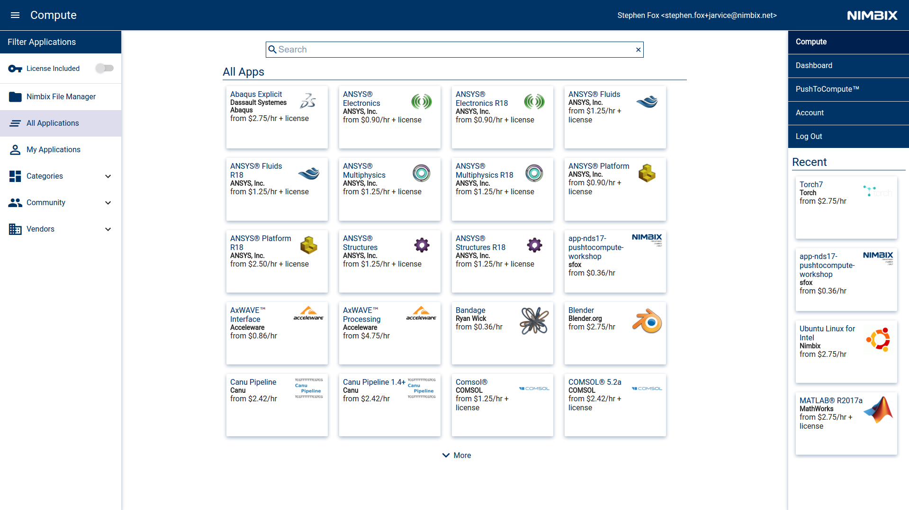

Serverless Workflows
Allow users to consume applications in an opinionated way without provisioning servers.
PushToCompute™
Enable developers to deploy applications as opinionated workflows for those users.
Benefits of PushToCompute™
- Turn-key CI/CD Service
- Maintain developer velocity
- Ship complete environments, not just an installer
- Reduce support overhead for software vendors
- Declarative application versioning
What is PushToCompute™?
Package, deploy and release on JARVICE.
- PACKAGE your application environment (OS + Config) using Docker, Git and JSON AppDef
- DEPLOY opinionated workflows using Docker and the PushToCompute™ Build Service
- RELEASE cloud applications to the app catalog, and optionally monetize your apps.
What is a Workflow?
A workflow is a combination of:
- an application (OS + environment + application binaries)
- its action
- the hardware it runs on
- input data
- output data
Examples of Workflows

Examples of Workflows
- Launch a cluster of NVIDIA P100s and run Kinetica's real-time analytics GPU DB.
- Launch NVIDIA DIGITS web application on an NVIDIA DGX-1.
Examples of Workflows
- Configure a model for a parameterized aerodynamics simulation.
- Run a computational fluid dynamics simulation in batch mode on a cluster.
Examples of Workflows
- Run an algorithm in MATLAB with a GPU for a few hours
- Run MATLAB with minimal hardware requirements to review results.
Examples of Workflows
- Train a Deep Learning model using 20 GB of training input data.
- Train a Deep Learning model using 500 GB of training input data using a newly-released GPU type.
- Run an MPI-based application appropriately sized for their input data set.
Common Workflow Architectures
- BATCH Run a single, parameterized command, and exit
- DESKTOP INTERACTIVE Run an application in a remote desktop
- WEB INTERACTIVE Run a single-tenant web application
- DEVELOPER ENVIRONMENT Launch a configured server with SSH access
- SERVICE Start a web service and run indefinitely
### Tutorial
Objective: Build a workflow with two commands:
1. A batch endpoint to "stylize" an image using https://github.com/jcjohnson/neural-style
1. A Desktop GUI application that displays the image.

### Prerequisites
In order to follow along in this tutorial, you'll need accounts on the following services:
1. [JARVICE](https://mc.jarvice.com)
1. [DockerHub](http://dockerhub.com)
1. [Github](http://www.github.com)
Fork the Github repo at [https://github.com/nimbix/nds17](https://github.com/nimbix/nds17)
Step 1: "Hello, JARVICE"
We pull an image from DockerHub and run it on JARVICE with the default AppDef.
Step 1: "Hello, JARVICE"
Pull the Docker Image
- Log in to the Material Compute interface at https://mc.jarvice.com
- In the PushToCompute section, select "New" to create a new PushToCompute App
- Docker Registry: nimbix/ubuntu-desktop:trusty
- Monitor the status of the pull in the History Window
### Step 1: "Hello, JARVICE"
#### Run Some Commands
5. Click the app card and select "batch".
6. Enter `echo "hello, jarvice"` and select the n0 machine.
7. Try running other commands:
* `cat /etc/JARVICE/cores`
* `cat /etc/JARVICE/nodes`
* `cat /etc/JARVICE/jobinfo.sh`
8. (Exercise) Try running "Server" and connecting to the Nimbix desktop interactively.
Step 2: Build an application from an app repository on Github
https://github.com/nimbix/nds17
Note If you would like to follow along by editing the repository, please fork this repository now.
Step 2: Build an application from an app repository on Github
- In PushToCompute, connect a DockerHub account.
- Create a new app:
- Docker Repository YourDockerHubUserName/nds17
- Git Source URL
git@github.com:nimbix/nds17.git
### Step 2: Build an application from an app repository on Github
#### Build with the PushToCompute Build Service
1. From the app card, select "build and pull"
1. Check the commands. These are defined in /etc/NAE/AppDef.json.
1. The custom image is defined in /etc/NAE/screenshot.png
Check the [Dockerfile](https://github.com/nimbix/nds17/blob/master/Dockerfile) and [AppDef](https://github.com/nimbix/nds17/blob/master/NAE/AppDef.json)
*Note*: This is like running `docker build`
### Step 3: Customize your Dockerfile
Nimbix has many base images. `docker search nimbix`
Common base images include:
* nimbix/ubuntu-desktop
* nimbix/base-ubuntu-nvidia (NVIDIA CUDA base images with Nimbix extras)
* nimbix-ubuntu-base
* nimbix/centos-desktop
* nimbix/centos-base
We've built a special base image for today's workshop: `jarvice/base-nds17`
```FROM jarvice/base-nds17```
* [Torch](http://torch.ch/) is a library that is popular for scientific computing and deep learning. We have built a special Torch base image that is pre-configured for use on NIMBIX with GPU-capable Torch.
* [jcjohnson/neural-style](Neural Style) An implementation of image stylization in Torch. It is open source at https://github.com/jcjohnson/neural-style
[Dockerfile](https://github.com/nimbix/nds17/blob/master/Dockerfile)
```bash
FROM jarvice/base-nds17
RUN apt-get update && \
apt-get install -y pinta curl && \
apt-get clean
COPY ./NAE/AppDef.json /etc/NAE/AppDef.json
RUN curl --fail -X POST \
"https://api.jarvice.com/jarvice/validate" \
-d@/etc/NAE/AppDef.json
COPY ./NAE/screenshot.png /etc/NAE/screenshot.png
COPY ./scripts/stylize.sh /usr/local/scripts/stylize.sh
```
### Step 4: Define the application workflows
We want to be able to run the following command:
```th neural_style.lua -style_image style.jpg -content_image content.jpg```
So, let's build an [AppDef](https://github.com/nimbix/nds17/blob/master/NAE/AppDef.json) that does this.
```th neural_style.lua -style_image style.jpg -content_image content.jpg```
```javascript
"stylize": {
"path": "/usr/local/scripts/stylize.sh",
"interactive": false,
"name": "Stylize an Image",
"description": "Style an image using TORCH-based Neural Style",
"parameters": {
"-style_image": {
"type": "FILE",
"required": true,
"name": "Style image",
"description": "The image to base the new style on",
"filter": "*.png|*.jpg"
},
"-content_image": {
"type": "FILE",
"required": true,
"name": "Content image",
"description": "The image that will be stylized",
"filter": "*.png|*.jpg"
}
},
"machines": [
"ng*"
]
}
```
COPY ./NAE/AppDef.json /etc/NAE/AppDef.json
[Dockerfile](https://github.com/nimbix/nds17/blob/master/Dockerfile)
```bash
FROM jarvice/base-nds17
RUN apt-get update && \
apt-get install -y pinta curl && \
apt-get clean
COPY ./NAE/AppDef.json /etc/NAE/AppDef.json
RUN curl --fail -X POST \
"https://api.jarvice.com/jarvice/validate" \
-d@/etc/NAE/AppDef.json
COPY ./NAE/screenshot.png /etc/NAE/screenshot.png
COPY ./scripts/stylize.sh /usr/local/scripts/stylize.sh
```
```bash
#!/bin/bash
# NDS17 PushToCompute Workshop
. /usr/local/torch/install/bin/torch-activate
cd /usr/local/neural-style/neural-style
th neural_style.lua -backend cudnn -output_image /data/stylized.png $@
```
COPY ./scripts/stylize.sh /usr/local/scripts/stylize.sh
If you forked the Github repository, push your changes and rebuild
git push origin master
Then go back to https://mc.jarvice.com to build and pull
### Step 5: A Better Workflow
```javascript
"stylize": {
"path": "/usr/local/scripts/stylize.sh",
"interactive": false,
"name": "Stylize an Image",
"description": "Style an image using TORCH-based Neural Style",
"parameters": {
"-style_image": {
"type": "SELECTION",
"required": true,
"name": "Style image",
"description": "The image to base the new style on",
"values": [
"Starry Night",
"Picasso",
"8-bit JARVICE"
],
"mvalues": [
"/usr/local/styles/starrynight.png",
"/usr/local/styles/picasso.png",
"/usr/local/styles/jarvice.png"
],
},
"-content_image": {
"type": "FILE",
"required": true,
"name": "Content image",
"description": "The image that will be stylized",
"filter": "*.png|*.jpg"
}
},
"machines": [
"ng4",
"ng5",
"ngd4",
"ngd5"
]
}
```
### Step 6: Releasing on JARVICE
Ensure that your application has all of the proper metadata set:
* /etc/NAE/AppDef.json
* /etc/NAE/screenshot.png
* /etc/NAE/help.html
* Categories are set in the AppDef
### Step 6: Releasing on JARVICE
#### Monetization Options
* Pass-through license uplift cost = money in your pocket proportional to utilization
* Applies proportionally to the number of total CPU cores
### Step 6: Releasing on JARVICE
#### Community Apps vs Certified Apps
* Certified Apps: Nimbix provides first-line support for Certified applications. This requires a business agreement, test cases to verify the application's exisiting workflows and information on how to use the application.
* Community Apps: Community apps are apps for which support is provided by the application owner.
#### Best Practices and Examples
See examples at [Nimbix GitHub space](https://github.com/nimbix)
* Remote visualization application: [ParaView](https://github.com/nimbix/app-paraview)
* Batch and interactive processing: [Canu Pipeline](https://github.com/nimbix/app-canupipeline)
* Ephemeral developer environment: [PowerAI](https://github.com/nimbix/powerai)
* Web service application: [DIGITS](https://github.com/nimbix/app-digits)